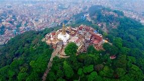

City in Nepal:
Lalitpur Metropolitan City, historically Patan, is the third largest city of Nepal after Kathmandu and Pokhara and it is located in the south-central part of Kathmandu Valley which is a new metropolitan city of Nepal. Lalitpur is also known as Manigal. It is best known for its rich cultural heritage, particularly its tradition of arts and crafts. It … More
Lalitpur Metropolitan City, historically Patan, is the third largest city of Nepal after Kathmandu and Pokhara and it is located in the south-central part of Kathmandu Valley which is a new metropolitan city of Nepal. Lalitpur is also known as Manigal. It is best known for its rich cultural heritage, particularly its tradition of arts and crafts. It is called city of festival and feast, fine ancient art, making of metallic and stone carving statue. At the time of the 2011 Nepal census it had a population of 226,728 in 54,748 individual households. The city received extensive damage from an earthquake on 25 April 2015.
Click on 'Book' button for fill up the details so that you cant visit this place for tour!!!